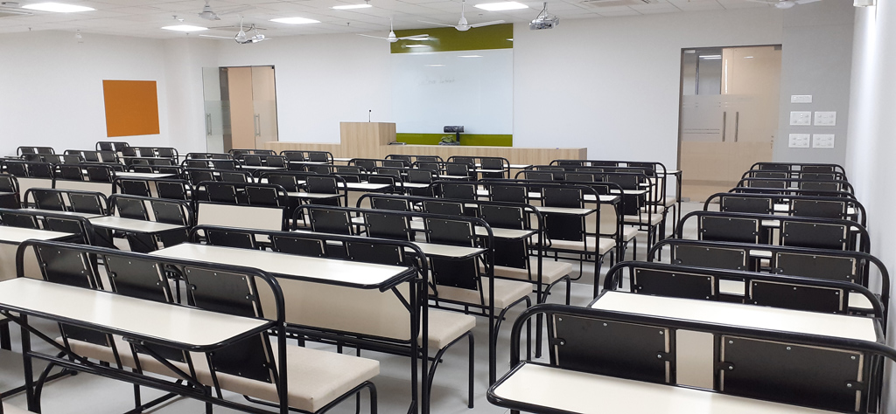
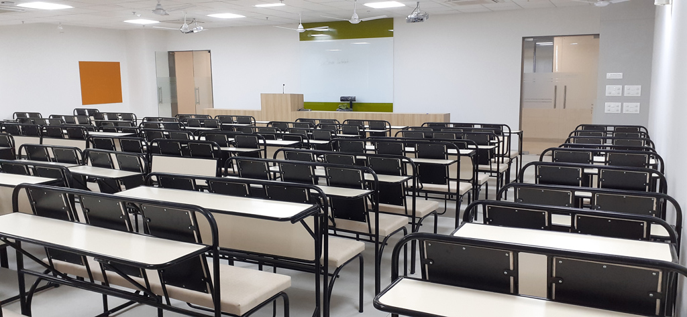

At Sunbeam we believe retaining a competitive edge is imperative for any individual in today's professional world. Companies are restructuring their organizations & reengineering their business processes. Not only have the challenges become more demanding, but also the rewards of staying at the forefront seem to be promising.
In this scenario, technical & personal skills which provide effective solutions & time critical support are of principal significance for the long term growth of professionals. Sunbeam's expertise in effectively delivering training, solutions & services has made it a favored institution to many students & professionals focused on an aggressive career growth strategy.
 

The Sunbeam campus at Rajiv Gandhi Infotech Park, Hinjawadi is spread over an area of 1 Acre which includes 70,000 sq feet of built-up area and 5-floor building for C-DAC courses.
The teaching-learning process is facilitated in 3 lecture halls, 5 computer labs with high-speed Internet connectivity, a seminar room, conference room, library. The entire sunbeam campus is Wi-Fi enabled. Sunbeam also provides hostel facility to girls. The construction of a Hinjewadi branch has been completed and the AUG 2019 batches have started in a new building.
SunBeam Karad is most conveniently located just opposite the Karad Bus Stand & 4 km from the Karad Railway Station. Karad is located on the Mumbai-Bangalore NH-4 & only 5 hours from Mumbai, 3 hours from Pune & 1 hour from Kolhapur. The institute is spread across a campus of 12,000 sq ft covering the institute and the on campus hostels & mess.
The campus houses aworld class academic and computing infrastructure. The campus houses two state-of-the-art classrooms each equipped with ergonomic seating arrangements, air conditioning, LCD projection system, public address system and soothing interiors conducive to learning.
The computing infrastructure is spread across four state-of-the-art labs designed with utmost care to enable students to spend prolonged hours in their practicals. Three of the four labs have been designed to enable classroom approach making concurrent conduct of lecture and practicals (online training) possible.
The campus also houses the on-campus hostelwhich isfully furnished and an on-campus mess which makes SunBeam Karad a truly residential & 24 hours institute. The institute also hasawell equipped library,administrative blocks, server rooms, staff rooms etc.